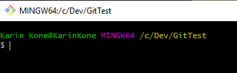
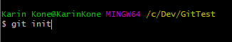
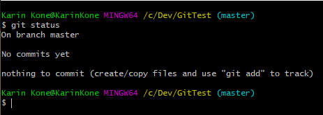
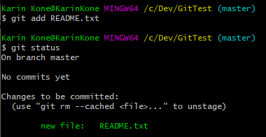
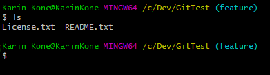

git
Own Examples
Image 1: create new folder and open Git Bash terminal inside it.
Image 2: initialize git repository.
 Image 3: run git status to check the current status of the repository.
Word (master) has appeared after the repository path which means we are in the master branch like the status says.
We have made no commits yet and we have nothing to commit because there are no files added.
Image 4: after adding a new file "README.txt" to the repository, the status shows we have 1 untracked file which is shown in red.
 Image 5: let's add the new file and run git status again.
Now we see that the new file is green instead of red and is ready to be committed. If we modify the file,
the status will again show the file in red and mentions that it's been modified, after which the file has to be added again to the staging area.
Image 6: commit files to repository and run git status again.
The commit-operation shows how many files were changed, along with how many insertions and deletions were made. Also, after the commit,
our working tree is now clean, so there are no differences to the committed version of the repository.
Image 7: create a new branch called "feature". Now we can see that the (master) has become (feature), and we can work on a different branch without affecting our master branch.
 Image 8: we have added and committed new file "License.txt" to feature-branch.
Let's run ls command to list every file in feature-branch.
Image 9: let's change back to master and run ls to see our files in master-branch.
There is only README.txt at this point. So let's merge feature to master and run git status and ls again.
Now we see that there is License.txt file in master-branch and it's already been committed when it was in feature-branch.
Image 10: let's run git branch to list all branches on local repository (current branch is shown in green),
and then delete the feature-branch with git branch -d feature now that it has been merged to master and served its purpose.
After running git branch again, we see that feature-branch is removed.
Since this was not a cloned repository, we would have to add our own remote server with, for example:
git remote add origin https://github.com/Username/MyProject
To push our local repository changes to the remote repository, we would run git push origin master command.
To pull changes from remote repository (if someone else works in the same project), we would run git pull origin master command to update our local repository.